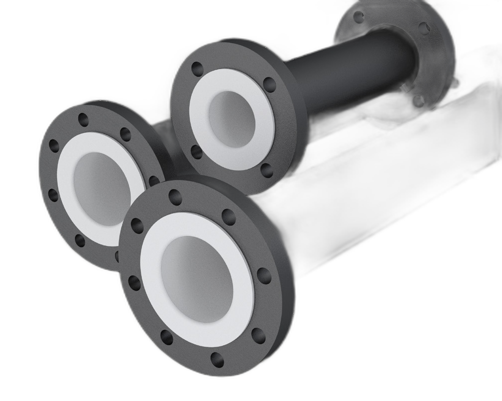
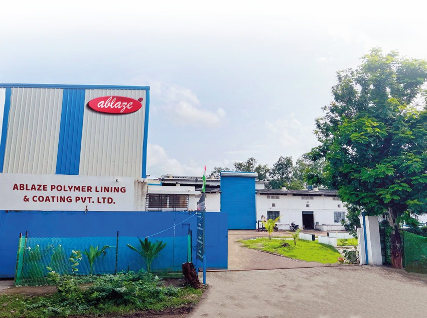

01
Material
Material Verification
Incoming materials are checked before the component enters production.
↗
A comprehensive inspection and testing programme runs through the entire production process, compliant with ASTM F1545.
Every lined component is inspected before dispatch.
inspection before release
We inspect the finished product as a complete system — dimensions, liner integrity, pressure performance and surface finish all form part of the release decision.
From raw material verification to final approval, every checkpoint contributes to the same release standard.
Incoming materials are checked before the component enters production.
Components are measured against the approved drawing and required tolerances.
The lined construction is checked before electrical and pressure testing.
Every liner is spark tested at 5000 × E volts, capped at 15,000V.
Pressure testing is carried out as required by the lining technique and applicable standard.
Surface finish, weld aspect and painting thickness are checked against the standard.
Every test is recorded on a Manufacturer's Test Report before dispatch.
Antico's fluoropolymer lined products are designed for highly corrosive applications and comply with International Standards such as ASTM F 1545.
Fluoropolymer raw materials are certified to ASTM D4894/D4895 (PTFE), ASTM D3307 (PFA) and ASTM D2116 (FEP).
3.1 mill certifications to EN 10204 are available on request, as are FDA certifications for the fluoropolymer materials.
It follows the component through production — from material verification to final approval.

Every finished component is subject to the checks required to verify dimensions, liner integrity, pressure performance and finish.
Every component measured against the approved drawing before release.
5000 × E volts, with E as liner thickness in mm, capped at 15,000V, on every liner.
Pressure-tested as per standard; method depends on the lining technique used.
Surface finish, weld aspect and painting thickness checked against standard.
A hydrostatic test is carried out on components with vent holes that have been injected or created from tubes; a pneumatic test applies depending on the lining technique used. Every test is recorded on a Manufacturer's Test Report.
Every lined part is held to the following dimensional and angular tolerance bands as standard.
| Dimension | Range | Dimensional Tolerance | Angular Tolerance |
|---|---|---|---|
| Lengths | 0 – 315mm | +0 / -3mm | ±0.5° |
| Lengths | 315 – 1000mm | +0 / -4mm | ±0.5° |
| Lengths | 1000 – 6000mm | +0 / -5mm | ±0.5° |
| Diameters | NB 1"–4" | +0 / -3mm | ±0.5° |
| Diameters | NB 5"–8" | +0 / -4mm | ±0.5° |
| Diameters | NB 10"–24" | +0 / -5mm | ±0.5° |
Manufacturer's test reports and mill certifications are available on request.
Request a Quote